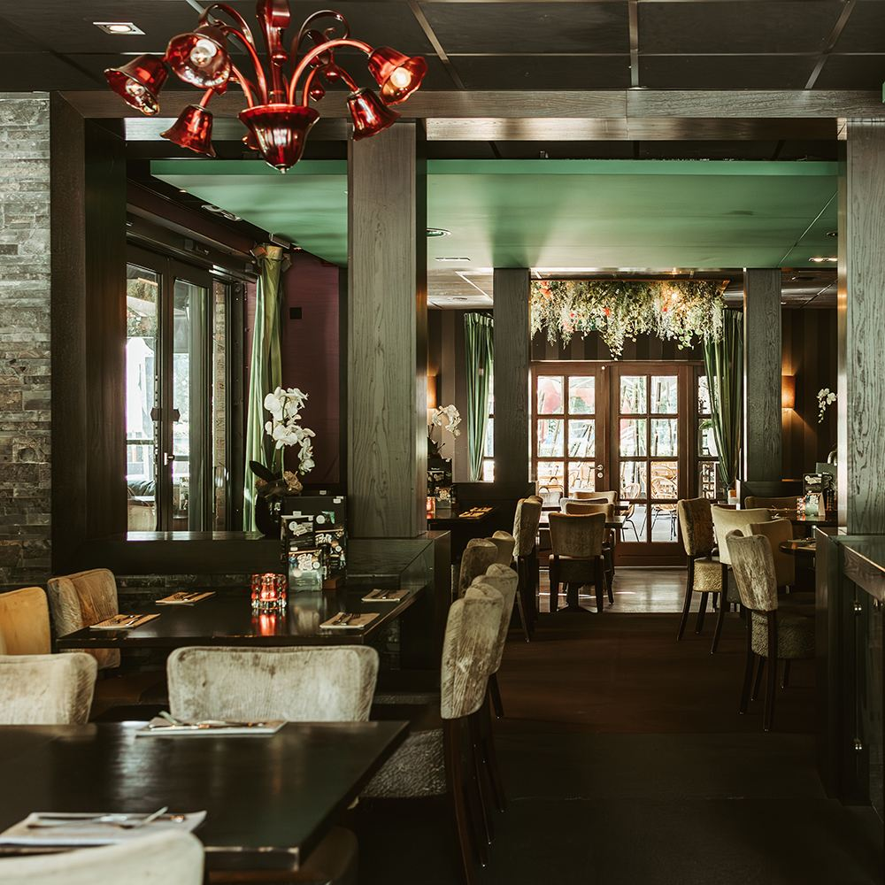
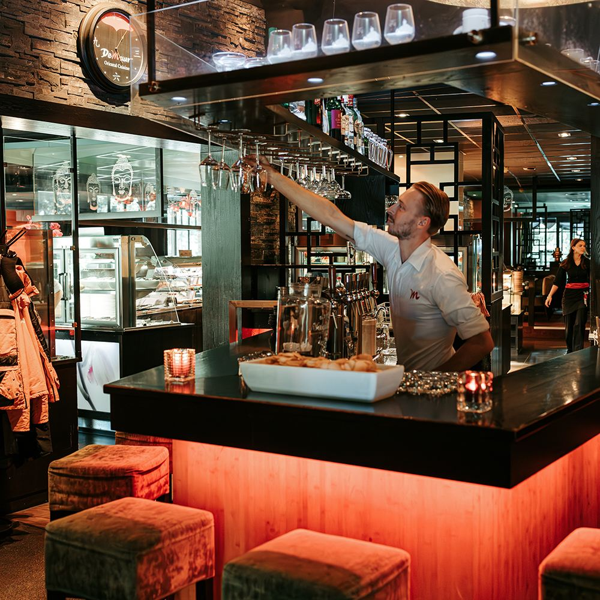
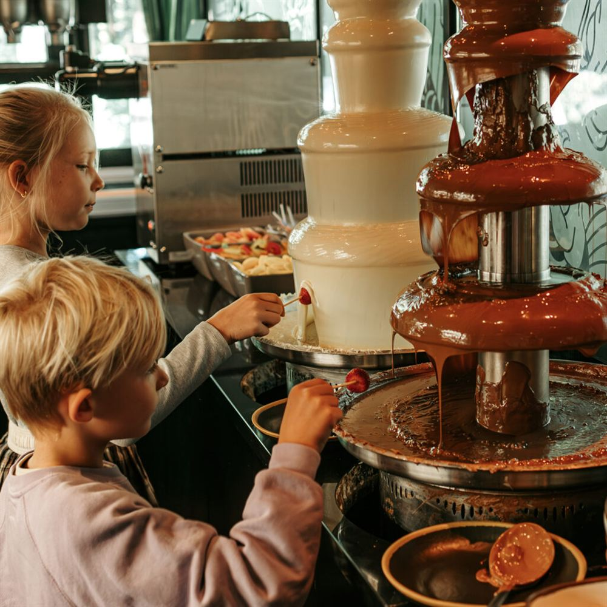
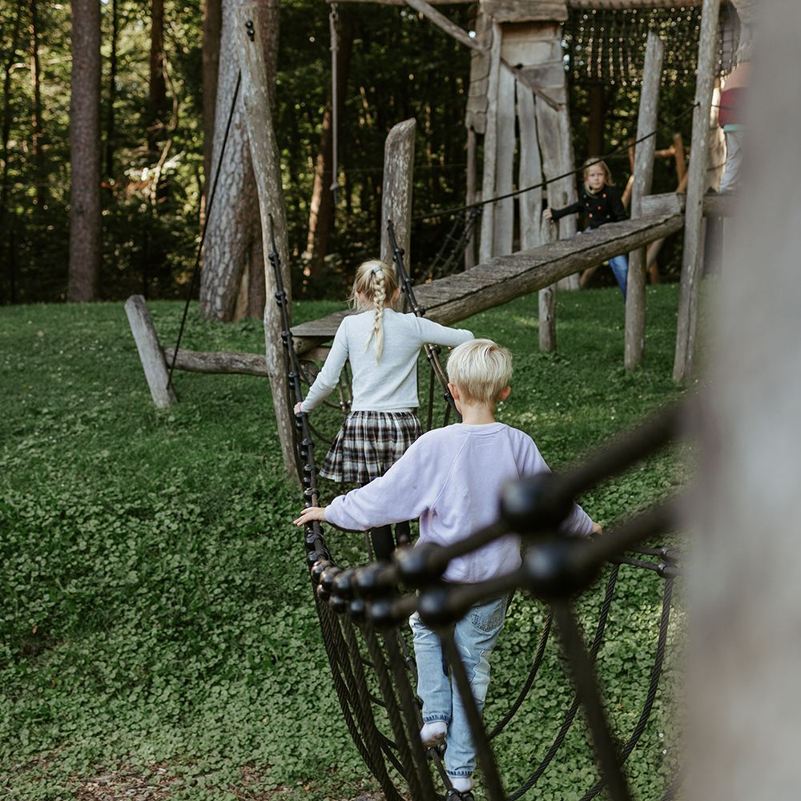
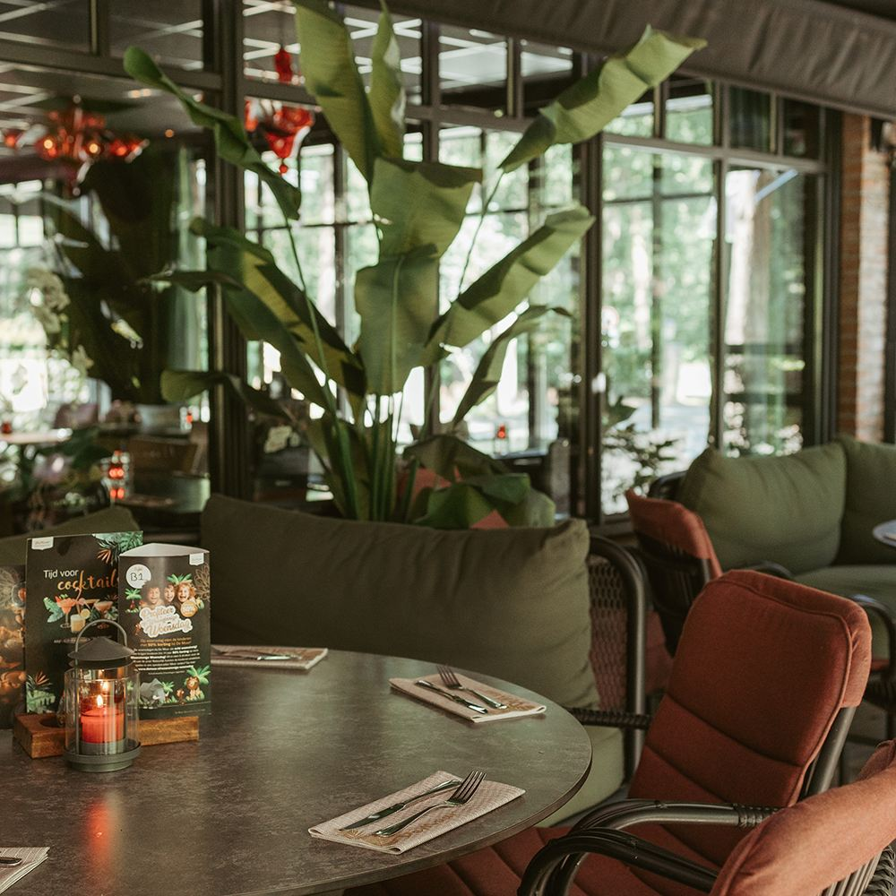
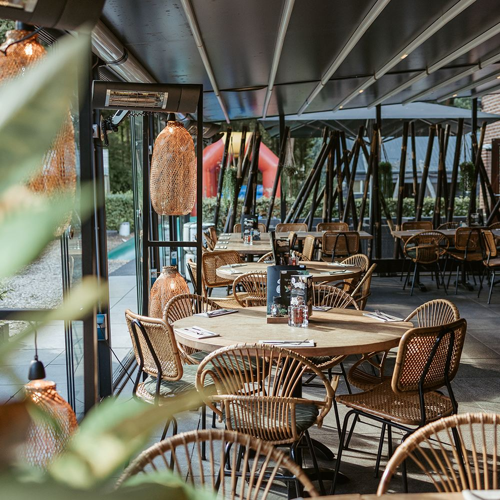
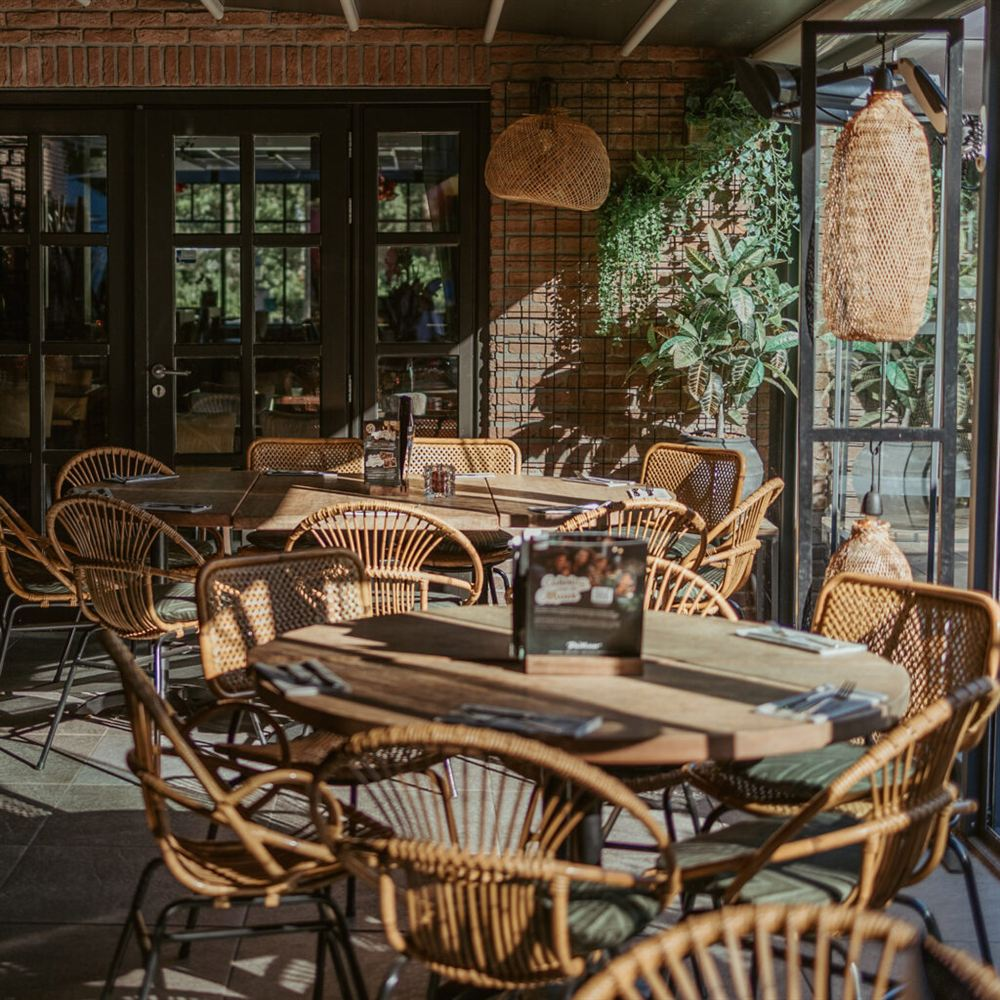

In juli 1990 startten Yongfa en Meihong Hu de Chinese Muur. Met hun jarenlange ervaring zetten zij De Muur vrijwel direct op de kaart.
Waar het begon met à la carte dineren en afhalen, is De Muur altijd meegegroeid met de wensen van de gasten. In 2001 was De Muur een van de eerste restaurants in Nederland die het live wokken introduceerde. Eén ding heeft voor de familie Hu altijd voorop gestaan: kwaliteit en genieten. Want waarom zou je genoegen nemen met minder?
De Muur is dé plek om met het gezin, familie, vrienden of collega's all-in te genieten. Door het ruime aanbod is er voor iedereen wat wils.
1990De Muur opent in Putten
2001Een van de eersten met live wokken


Zes buffetten, één avond
Een kleine selectie van wat onze buffetten voor u in huis hebben. Een aantal gerechten wisselt, zodat u iedere keer iets anders kunt proberen.
Voorgerechtenbuffet
Twee wisselende soepen, diverse frisse salades, rauwkost, carpaccio en verschillende soorten vis, brood en kruidenboter. De maaltijd kan bijna niet beter beginnen.
Sushibuffet
Verschillende soorten sushi en sashimi, dagelijks vers gerold. Uiteraard met zeewiersalade, gember en wasabi.
Warm buffet
Populaire Aziatische hoofdgerechten, waaronder babi pangang, foe yong hai en onze befaamde varkenshaas met zwarte bonensaus. Voor de kinderen ook frietjes, frikadellen en andere snacks, en er worden crêpes gebakken.
Grillbuffet
Ruim vijftien soorten vis en vlees, bereid door onze chefs op de authentieke Japanse teppanyaki-grillplaat.
Wokbuffet
Stel zelf uw wokmaaltijd samen uit groenten, vlees en vis en laat het wokken met één van onze tien woksauzen.
Dessertbuffet
Vijf soorten ambachtelijk schepijs, een softijsmachine, vers seizoensfruit, taarten, bavarois en een chocoladefontein.

Voor de kleine gasten
Frietjes en snacks op het warme buffet, crêpes voor de allerkleinsten en de volwassen zoetekauw, en een chocoladefontein bij het dessert. Na het eten kunnen de kinderen zich vermaken in ons speelparadijs.
U geniet onbeperkt van het hele buffet. Kies hoe lang u blijft: 2, 2,5 of 3 uur.
Bij het all-in arrangement zijn inbegrepen:
alle frisdranken en verse sappen
bieren van de tap en diverse speciaalbieren uit fles
onze huiswijn, koffie en thee
Doordeweeks all-in genieten vanaf 17.00 uur, op zaterdag en zondag al vanaf 16.00 uur.
All-in
12 t/m 64 jaar
65+
3 t/m 11 jaar
2 uur
41,95
39,95
2,95 per levensjaar
2,5 uur
44,95
42,95
2,95 per levensjaar
3 uur
47,95
45,95
3,50 per levensjaar
Kinderen van 0 t/m 2 jaar eten gratis mee.
All-in
12 t/m 64 jaar
65+
3 t/m 11 jaar
2 uur
44,95
42,95
3,25 per levensjaar
2,5 uur
47,95
45,95
3,25 per levensjaar
3 uur
50,95
48,95
3,50 per levensjaar
Kinderen van 0 t/m 2 jaar eten gratis mee.
Op feestdagen (met uitzondering van Kerst) gelden de weekendtarieven.
U betaalt uw arrangement vooraf. Gesplitst of apart afrekenen is niet mogelijk.
It's Christmas time
Wij pakken weer uit met de feestdagen: onbeperkt genieten van eten en drinken, extra gerechten van voorgerechten tot desserts en wild van de grill. Ook tijdens de kerstdagen kunnen de kleine gasten zich vermaken in ons speelparadijs.
Tijdens de kerstdagen werken wij alleen met ons 2,5 uur all-in kerstarrangement.
1All-in Christmas Brunch39,95Aankomst 12.30, 12.45 of 13.00 uur · 12 jaar en ouder
2All-in Christmas Dinner57,95Aankomst 16.00, 16.15 of 16.30 uur · 12 jaar en ouder
3All-in Christmas Dinner57,95Aankomst 19.15, 19.30 of 19.45 uur · 12 jaar en ouder
Kinderprijzen (gelijk voor alle rondes)
3 jaar€ 10,50
4 jaar€ 14,00
5 jaar€ 17,50
6 jaar€ 21,00
7 jaar€ 24,50
8 jaar€ 28,00
9 jaar€ 31,50
10 jaar€ 35,00
11 jaar€ 38,50
0 t/m 2 jaargratis

Eat and Play
Wegens succes verlengd. Op zaterdag en zondag van 15.30 tot 17.00 uur geniet u 1,5 uur all-in, eten én drinken, terwijl de kinderen lekker spelen. Ideaal na een drukke zaterdagmiddag of een zondagse wandeling.
30,95 all-in · kinderen 3 t/m 11 jaar 1,75 per levensjaar
T/m 31 december 2026, alleen za en zo, niet op feestdagen. Onbeperkt buffetten, live cooking en drinken (bieren, huiswijnen, frisdranken, warme dranken en sappen; geen gedistilleerd). Reserveren gewenst.

Speelparadijs
Ons kinderspeelparadijs is vernieuwd. De kleine gasten spelen hier eindeloos, terwijl u rustig geniet van het buffet.
Take-away en bezorging
Al jaren is de afhaal van De Muur een begrip in de regio. Haal af in Putten of laat het bezorgen in Putten, Ermelo en Harderwijk.
Dagelijks geopend vanaf 16.00 uur. Elke maand stellen we ook combinatiemenu's samen voor 1 tot 4 personen.
Bezorging vanaf € 15 in Putten en Ermelo, en vanaf € 20 in Harderwijk (postcodes 3842 t/m 3848). Bezorging geldt alleen voor bestellingen via de website en de De Muur App; telefonische bestellingen worden niet bezorgd.
Betaalbaar genieten van onze lekkerste specialiteiten. Ook perfect om met het gezin uw eigen combinatiemenu samen te stellen.
1Pisang goreng3,35Gebakken banaan, 2 st.
2Saté babi4,85Saté van varken met satésaus, 2 st.
3Saté ajam4,85Saté van kip met satésaus, 2 st.
4Koe loe yuk5,60Gepaneerde balletjes met varkensvlees, 4 st.
5Chun sie ngau yuk*12,95Beef met zoete sun meisaus
6Tipan dou shi ngau*12,95Ossenhaas in zwarte bonensaus
7Heizi kai*10,95Kipdijfilet in pittige ketjapsaus
8Tsja sue*11,95Gemarineerd varken met tsja suesaus
9Foe yong hai met kip*8,95Indisch eiergerecht met zoete tomatensaus
10Babi pangang*10,85Gebraden varkensvlees met pangangsaus
11Tjap tjoy met kip*8,95Gewokte groenten met kip
12Tau sie yuk*10,95Varkenshaas in zwarte bonensaus
13Gan min ha*12,75Garnalen met ui in zoetpittige tsja suesaus
14Kon po kai*11,95Kipdijfilet met cashewnoten in kruidensaus
15Mihoen kip8,35Met kippenvlees en groenten
16Tsja swo kai*11,95Kipdij met groenten in zoetpittige tsja suesaus
17Yu sian ngau*12,65Beef met peper, bosui en oestersaus
18Thaise kip red curry*11,65Kipdij met rode curry, kokos en limoengras
19Szechuan ha*12,65Gewokte garnalen in pittige Szechuansaus
20Pekingeend*17,95Eendenborstfilet in lichtpittige kruidensaus
21Xiang ya*17,95Gepaneerde eend met zoete sun meisaus
22Pian ya*17,95Eendenborstfilet met flensje
23Yasai yaki udon9,95Gebakken udon noodles met groenten
23AKali kai10,95Kippenborstfilet met kerriesaus
*) Bij deze kleine gerechten zit standaard een klein bakje witte rijst (gratis). Voor een klein bakje nasi of bami betaalt u 1,65.
Dagvers en traditioneel.
24Chinese tomatensoep4,75Zoals u van ons gewend bent!
25Soep van de dag5,75Vraag ons naar de soep van de dag
26Oosterse kippensoep4,75Met verse kipfilet
Oosterse en gefrituurde voorgerechten. Een goed begin.
48Tipan Szechuan kai18,95Kipdijfilet met pittige Szechuansaus
49Tipan tsja swo kai18,95Kipdij met groenten in zoetpittige tsja suesaus
50Tipan dou shi kai18,95Kipfilet in zwarte bonensaus
51Tipan Szechuan ngau21,95Ossenhaas in pittige Szechuansaus
52Tipan xuan zhi ngau21,95Beef met oesterknoflooksaus
53Tipan dou shi ngau21,95Ossenhaas in zwarte bonensaus
54Tipan ngau teriyaki21,95Ossenhaas in Japanse teriyakisaus
*) Bij de grote gerechten zit standaard een medium bakje witte rijst (gratis); voor een grote bak witte rijst betaalt u 1,15. Medium nasi of bami 1,85, groot 3,25. Meerprijs mihoen, Chinese nasi of Japanse noodles: normaal 4,75, groot 6,95.
Van zoet tot pittig.
55Kon po kai19,50Kipdijfilet met cashewnoten in kruidensaus
56Po lo kai19,50Gepaneerde kipdijfilet met verse ananas
57Yu sian ngau20,95Beef met gember, rode peper en knoflooksaus
58Mau pau20,95Beef met champignons en een zacht pikante saus
59Chun sie ngau yuk20,95Beef met zoete sun meisaus
60Tsja sue20,50Gemarineerd varkensvlees met zoetpittige tsja suesaus
63Gan sun min ha21,50Gewokte garnalen met ui in zoetpittige tsja suesaus
64Szechuan ha21,50Gewokte garnalen in sambalsaus
65Happy family20,75Diverse soorten vlees & garnalen in oestersaus
66Suanzi zacai17,50Paksoi met verse knoflook
66ATofu cai17,50Gebakken tofu in lichtpittige tsja suesaus met groenten
*) Bij de grote gerechten zit standaard een medium bakje witte rijst (gratis); voor een grote bak witte rijst betaalt u 1,15. Medium nasi of bami 1,85, groot 3,25. Meerprijs mihoen, Chinese nasi of Japanse noodles: normaal 4,75, groot 6,95.
Van Bali tot Sumatra.
67Kali kai18,50Kippenborstfilet met kerriesaus
68Daging smoor18,95Gestoofd Indisch rundvlees
69Boemboe Bali ngau20,95Beef in Indische boemboe Balisaus
70Babi pangang18,95Gebraden varkensvlees met pangangsaus
70ABabi pangang saté18,95Gebraden varkensvlees met satésaus
71Ajam pangang18,50Kipdijfilet met pangangsaus
72Babi pangang ketjap18,95Gebraden varkensvlees met ketjapsaus
73Foe yong hai met kip of garnaal14,75Indisch eiergerecht (meerprijs garnalen 2,75)
74Foe yong hai met champignon14,75Indisch eiergerecht met champignons
75Tjap tjoy met kip of garnaal14,75Gewokte groenten (meerprijs garnalen 2,75)
76Tjap tjoy met broccoli14,75Gewokte groenten met broccoli
77Gado gado13,95Gemengde groenten met satésaus
*) Bij de grote gerechten zit standaard een medium bakje witte rijst (gratis); voor een grote bak witte rijst betaalt u 1,15. Medium nasi of bami 1,85, groot 3,25. Meerprijs mihoen, Chinese nasi of Japanse noodles: normaal 4,75, groot 6,95.
Konichiwa! Sushi in the mix en Japanse gerechten.
78Sushi mix Happy Family19,50Combi van 16 stuks sushi
79Sushi mix Surf & Turf19,50Combi van 16 stuks sushi
80Sushi mix Salmon Passion19,50Combi van 16 stuks sushi
81Sushi mix Lucky You19,50Combi van 16 stuks sushi
81AChuka wakame8,25Japanse zeewiersalade
82Kip tsukune21,75Gegrilde kipdijfilet met Japanse teriyakisaus
83Tsie zie ngau21,95Angus beef met zoete Japanse teriyakisaus
84Teriyaki zalm21,95Gegrilde zalmfilet met Japanse teriyakisaus
85Lamsrack21,95Gegrilde lamsrack met knoflook, 6 stuks
*) Bij de grote gerechten zit standaard een medium bakje witte rijst (gratis); voor een grote bak witte rijst betaalt u 1,15. Medium nasi of bami 1,85, groot 3,25. Meerprijs mihoen, Chinese nasi of Japanse noodles: normaal 4,75, groot 6,95.
Geniet van Thailand.
87Thaise kip red curry18,95Kipdijfilet met pittige rode curry, kokos en limoengras
88Heizi kai18,95Kipdijfilet in pittige ketjapsaus
89Phaneng neua20,95Beef met groenten en citroenblad in rode currysaus
90Koeng kratiam21,50Gebakken garnalen met knoflook en oestersaus
*) Bij de grote gerechten zit standaard een medium bakje witte rijst (gratis); voor een grote bak witte rijst betaalt u 1,15. Medium nasi of bami 1,85, groot 3,25. Meerprijs mihoen, Chinese nasi of Japanse noodles: normaal 4,75, groot 6,95.
Voor ieder wat wils, al vanaf 1 persoon.
91Chinese rijsttafel (vanaf 1 pers.)23,95 p.p.6x mini loempia, babi pangang, foe yong hai, 4x koe loe yuk, tjap tjoy met kip en 1 stokje saté ajam
*) Bij de grote gerechten zit standaard een medium bakje witte rijst (gratis); voor een grote bak witte rijst betaalt u 1,15. Medium nasi of bami 1,85, groot 3,25. Meerprijs mihoen, Chinese nasi of Japanse noodles: normaal 4,75, groot 6,95.
124Hotbowl saté ajam12,95Warme bowl met nasi, bami of witte rijst met topping van kipsaté en pinda, krokante ui en kokos
125Hotbowl daging smoor12,95Warme bowl met nasi, bami of witte rijst met topping van daging smoor, krokante ui en kokos
126Hotbowl babi pangang12,95Warme bowl met nasi, bami of witte rijst met topping van babi pangang, krokante ui en kokos
Voor een Hollandse hap.
99Frikandel2,85
100Portie bitterballen3,206 st.
101Portie patat3,50
102Mini kaassoufflés3,804 st.
103Kipnuggets4,506 st.
Gemakkelijk, gezond en genieten! Stel in drie stappen uw eigen wokgerecht samen. Door onze verse ingrediënten heeft u in een handomdraai een gezonde maaltijd. De hoeveelheid is gelijk aan een maaltijd voor 2 personen, te bestellen vanaf 18,50.
Kies uw vlees of visKipfilet, kipdijfilet, varkenshaas, tofu, ossenhaas*, garnalen*, angus beef*
Kies uw groentenKomkommer, champignons, paprika, ui, broccoli, taugé
Kies uw sausOesterknoflooksaus, ketjapsaus, kon po saus, zwarte bonensaus, tsja suesaus, Szechuansaus, boemboe Balisaus, gele currysaus, teriyakisaus, sun meisaus, zoetzure loempiasaus, babi pangangsaus
*) Meerprijs ossenhaas, garnalen en angus beef 3,00.
Onze Oosterse keuken ook thuis of op kantoor. Geschikt voor ieder evenement en ook te bestellen met een klein budget. Van diner tot dranken, van planning tot personeel: we denken graag met u mee.
Catering Basic
14,95 per persoon
Kroepoek
Babi pangang
Foe yong hai met kip
Tjap tjoy met knoflook
Saté ajam
Nasi goreng
Bami goreng
Catering Classic
17,95 per persoon
Mini loempia
Kroepoek
Babi pangang
Foe yong hai met kip
Gegrilde kipdij met Japanse teriyaki
Seizoensgroenten met knoflooksaus
Saté ajam
Beef met rendangsaus
Daging smoor
Nasi goreng
Bami goreng
Catering Premium
19,95 per persoon
Mini loempia
Siu mai
Kerrie ko
Kroepoek
Babi pangang
Beef met boemboe Bali saus
Saté ajam
Seizoensgroenten met knoflook
Kipdij met Szechuan saus
Gegrilde zalm met teriyakisaus
Tsja sue
Nasi goreng
Bami goreng
Mihoen met kip
Vanaf 15 personen, kosteloos bezorgd binnen een straal van 10 km. Borden en bestek 2,75 p.p. Meer weten? Mail info@demuur.nl of bel 0341 35 43 36.
Binnen, in de serre of op het terras


Sparen met de De Muur App
Met de app spaart u voor een gratis diner of afhaalbestelling. Bij elke besteding spaart u 5% van uw rekening, dat u kunt gebruiken als korting of voor speciale aanbiedingen. In de app reserveert u ook een tafel, bestelt u afhaal of bezorging en hoort u als eerste van acties.
Al VIP met de spaarpas? Een fysieke pas haalt u op in het restaurant.
Werken bij De Muur
Wij zoeken een zelfstandig werkend kok en enthousiaste collega's voor ons team. Flexibel, ook in het weekend, gastvrij en met je mooiste lach? Bel of mail ons, of loop gewoon even binnen.
Mise en place en bereiden van alle ingrediënten
Meedenken over menu's, voorraad- en bestelbeheer
Vaktechnisch aansturen van hulpkrachten
MBO 3 werk- en denkniveau, kennis van basiskooktechnieken